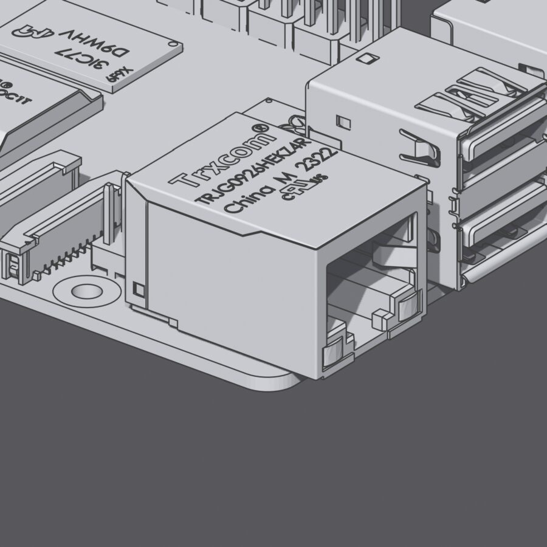
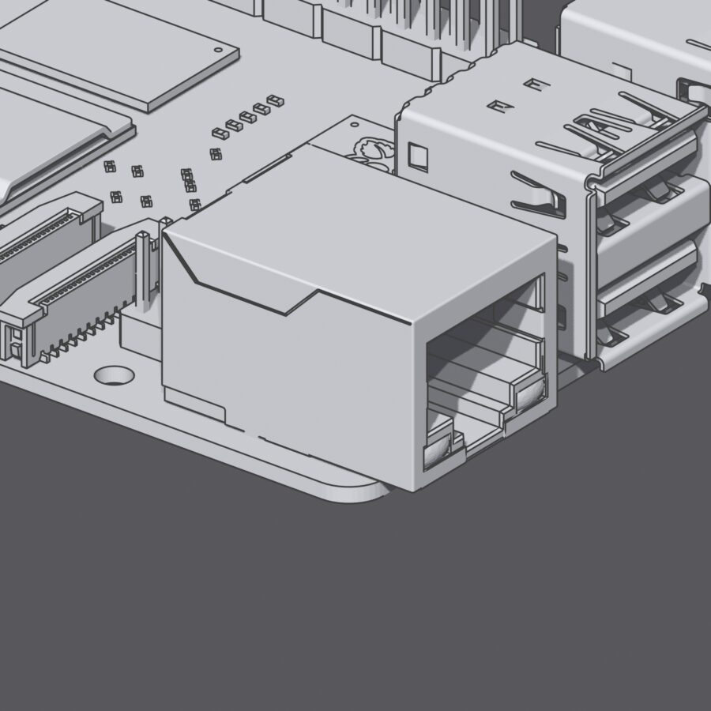
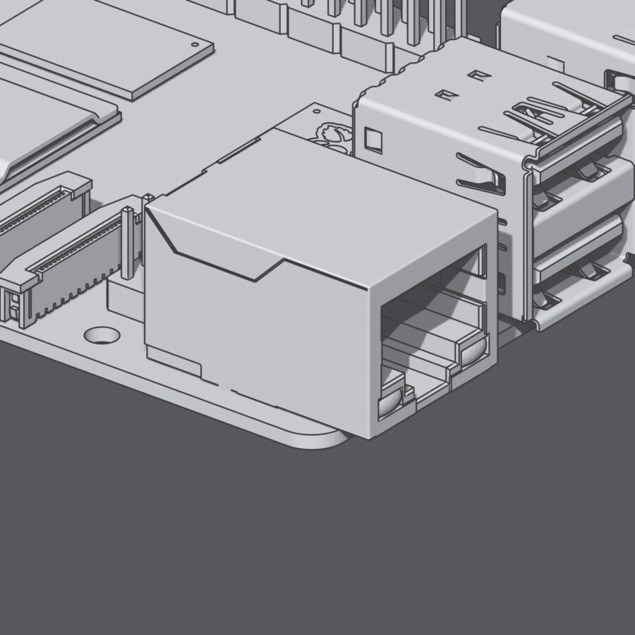
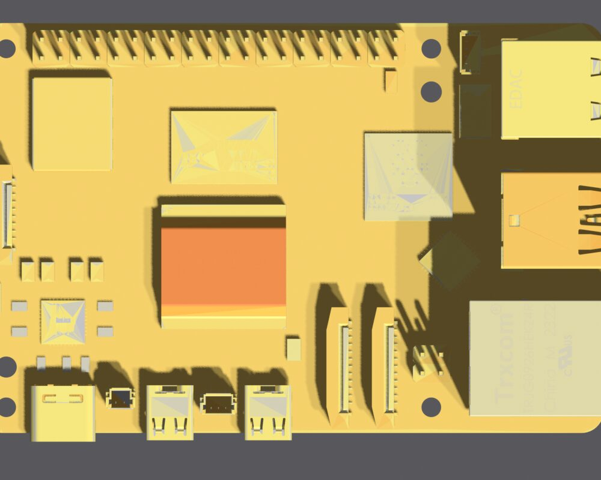
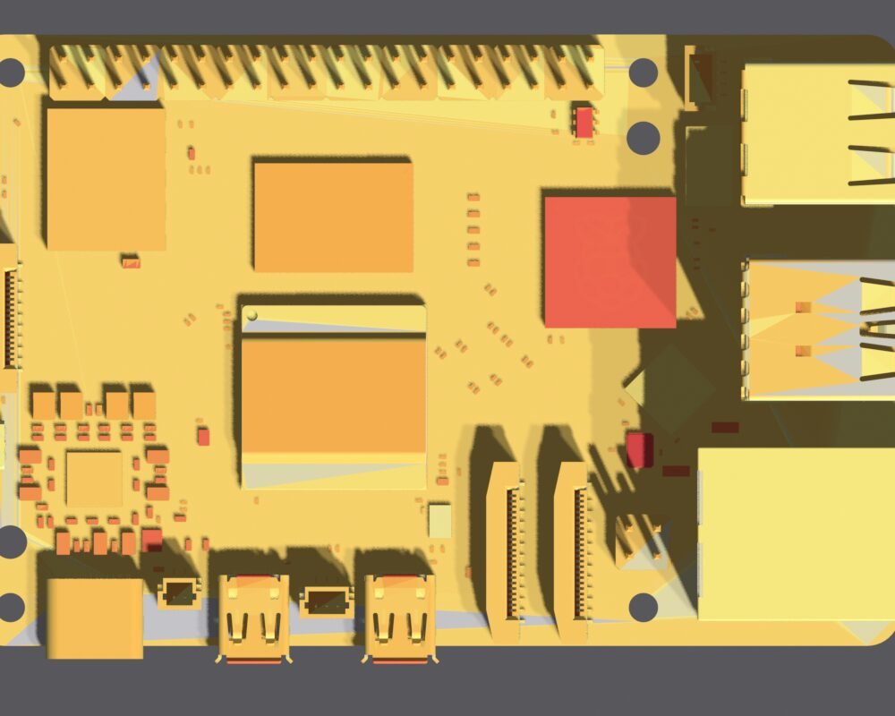
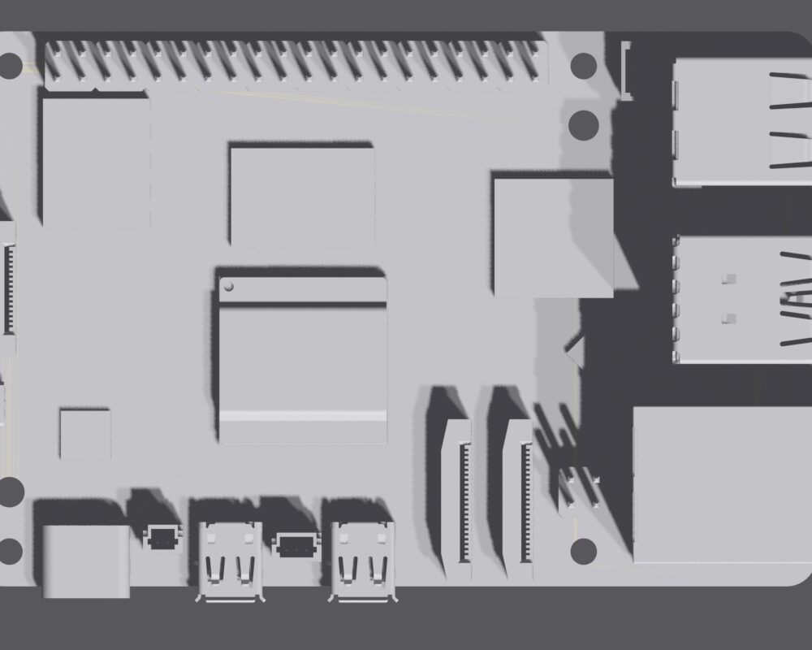
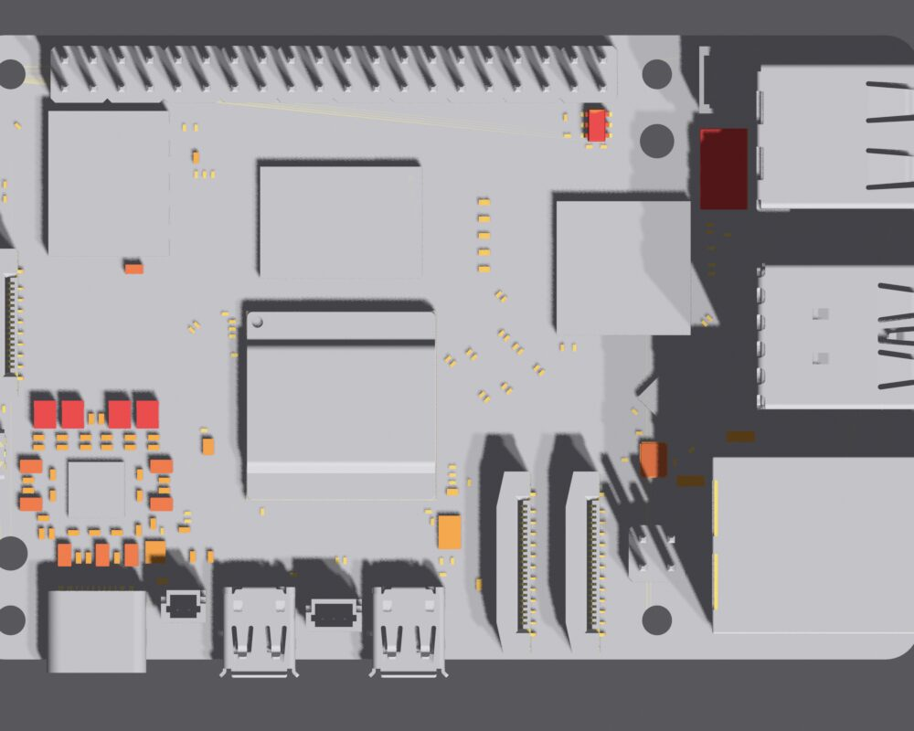

Three Raspberry Pi 5 models, one board
The VT350's e-box holds a Raspberry Pi 5. The model we had came from GrabCAD, and it was the last part we could show but not share. We compared it with Raspberry Pi's own STEP file and with a community simplification of that file. The lightest of the three is also the most faithful one we can use.
Sometimes simpler is better.
The candidates



Same camera, same scale, edges drawn. The official and simplified Ethernet jacks are the same part. The GrabCAD jack has a different body and a different vendor's markings.
How close is each one to the official model?
Each model was moved to its best fit over the official one, so a constant offset doesn't count against it. Then every surface was measured against the official surface, weighted by area. We measured both ways: how far a model's surfaces sit from the official ones, and how much of the official board a model is missing.
| Model | Within 0.1 mm | Over 0.5 mm off | Mean distance | Official area missing | STEP size | Solids |
|---|---|---|---|---|---|---|
| GrabCAD | 26% | 6.0% | 0.27 mm | 17.8% over 0.5 mm | 48.7 MB | 591 |
| Simplified | 100% | 0% | 0.00 mm | 1.4% over 0.5 mm | 24.0 MB | 25 |
| Official | the reference | 77.6 MB | 2,689 | |||
Before the fit, the GrabCAD board sat 1.6 mm off vertically and it measured 89.04 × 57.19 × 20.95 mm against the official 88.50 × 57.63 × 18.98. The 1.4% the simplified model lacks is the small SMD parts it removed on purpose.
Where they differ




What we took from it
- Detail isn't accuracy. The GrabCAD model has printed chip markings and a labelled Ethernet jack, and it is the furthest of the three from the real board.
- Leaving things out on purpose works. The simplified model removes what a printer enclosure never touches: 2,689 solids become 25, and every connector and chip that matters for fit stays exactly where Raspberry Pi drew it.
- The licence decides what you can share. The official model is MIT and the simplified one CC BY-SA 4.0, so both can go in the VT350 parts library with their source recorded. The GrabCAD terms only let us show it.
Method and sources
Each STEP was read in FreeCAD and meshed at 0.05 mm linear deflection. In Blender, each model was given a translation-only best fit (iterative closest point) onto the official mesh, and the distance from every face centre to the other surface was taken from a BVH tree and weighted by face area. The GrabCAD file is Y-up and was turned upright first. No VT350 model was opened or saved.
Official: Raspberry Pi Ltd, "rpi-5 3D STEP - No Graphics small file" (RP-010083-CA-1), pip.raspberrypi.com, MIT, "for guidance only". Simplified: Eduard Mandache, Raspberry Pi 5 – Simplified CAD Reference / Mock Model, CC BY-SA 4.0. GrabCAD: Mateusz Zelek, Raspberry Pi 5. Decision and file hashes: vt350#268.